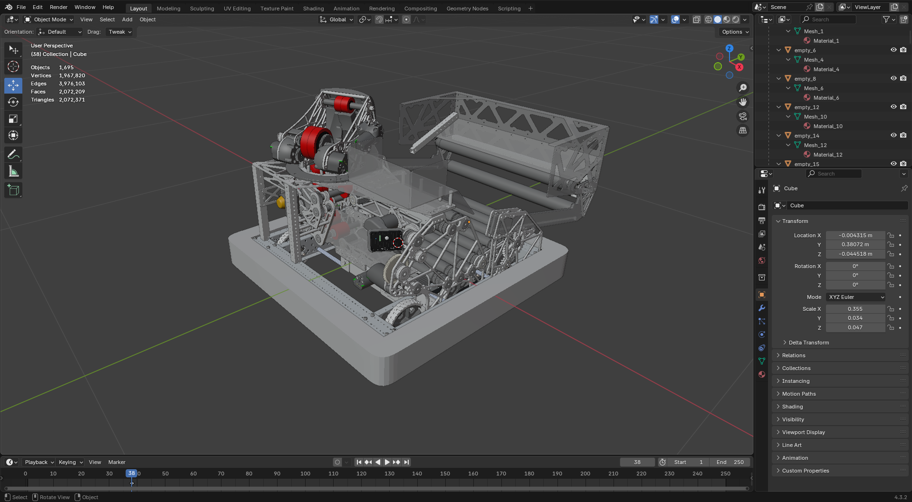
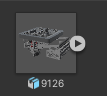
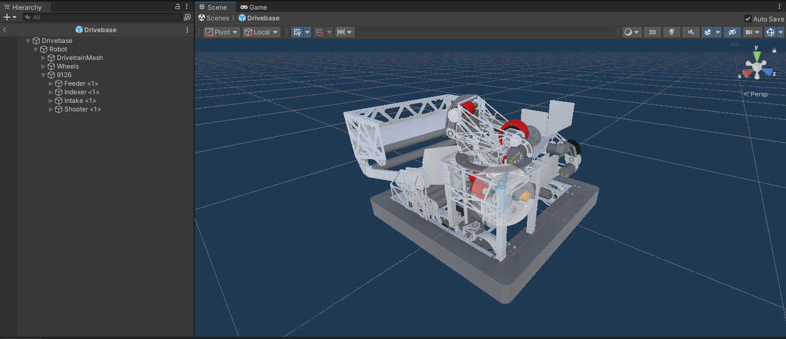
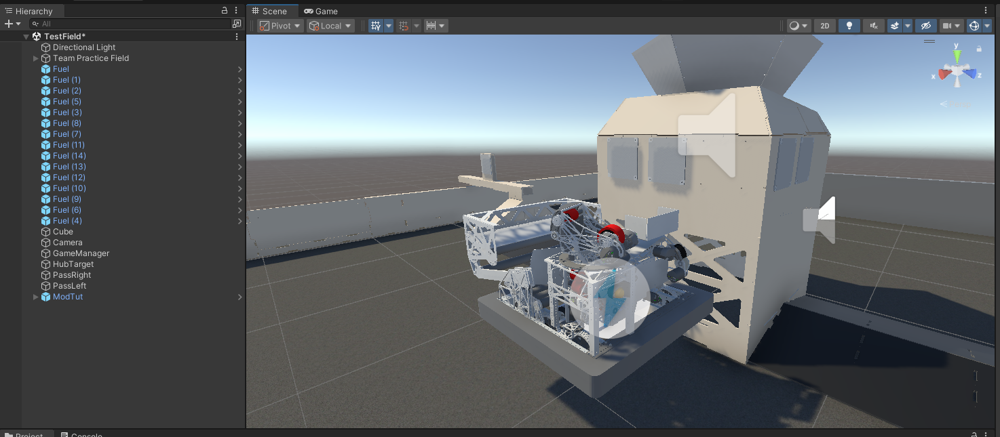
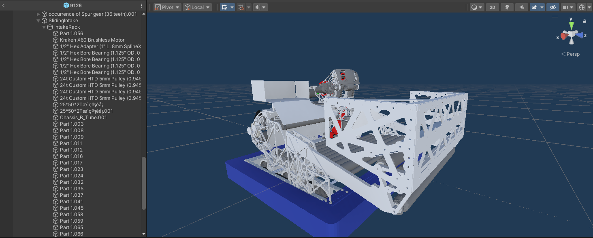
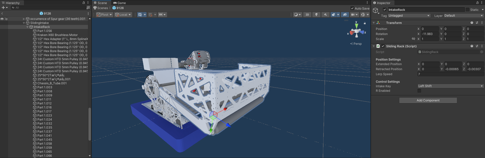

Overview
Welcome to the official documentation for Field Simulator. This documentation provides resources for adding custom robots to Field Simulator
Installation Guide
To install the game, download the appropriate package for your operating system from the download page. You can then extract the folder and run FieldSim.exe
System Requirements
This game is quite optimized(60 FPS on a laptop without a graphics card). Regardless, you should still have a capable CPU and GPU for this game. For editing and modding, see Unity's system requirements on Unity's website
Controls & Keybinds
Use W, A, S, D to move around, Spacebar to shoot, Left Shift to
intake, Right Shift to start the game and enable/disable robot, R to restart the
game(only after you click play), KAim at hub(turret only), J/L to pass left and
right respectively.
Featured FRC Game
Intro to modding
FieldSim allows players to make custom robots! FieldSim is set up to make making turret and static single
shooters very easy! If you are interested in modding, you should already have some basic Unity and maybe a
little coding experience prior before attempting to make your own robot. FieldSim does have its limitations,
the limitatoins of Fieldsim are as follows:
1. Swerve is not implemented
This project
was one of my first, and swerve was very difficult to get working(with a truckload of bugs)
2.
Unity doesn't like high fidelity models
It might be just my computer, but Unity struggles to run
all of the phyisics and other things when the robot you imported has more polygons that a typical fab
asset.
3. Drum shooters and multi turrets are not possible as of now
Due to the way
that the hopper system works, drum shooters and multiple turrets are not possible
Getting started!
With all of that out of the way, lets get started! First, you will need Unity
Go to Unity's website and download Unity hub. Then download Unity 2022.3.62f3(you may need to go into unity archive). Download this project by clicking github on the top right of this website. Download the repo, unzip it and open it in Unity. Congratulations, you now have FieldSimulator on your computer!
Importing Robot CADs
Importing a robot CAD is a necessary step in getting your robot into this game. Start by exporting your robot's CAD from the software it was designed in. I recommend exporting it as an FBX, OBJ, or GLB/GLTF. If you would like to already start optimizing your CAD, open it in blender.(Your cad does not need to have the tank drive base thrown in, FieldSim already has the drivebase)

Once in blender delete all of the screws, that really helps with optimizing the CAD. Then export that blender file as an FBX. Drag and drop your robot CAD into Unity's inspector, it should look like this

How to make your robot driveable!
Next, you should consider making your robot driveable. This should be really easy since I included a
drivebase thats all rigged up. Simply duplicate the Drivebase prefab in /Resources/Robots/. You
can name it to whatever you want. You can then drag and drop your Robot CAD, make sure to parent it to
"Robot". Right click the mesh, and select Prefab > Unpack Completely. You should then be able to
delete all drivetrain components on the robot. Look at this reference picture for example.

To test out your robot, open Scenes/TestField, Delete the robot currently there, and drag your
prefab onto the field. Raise it over the field like so. Hit play and try it out!

Make a sliding assembly for your intake
To make your robot have a sliding intake, there are multiple steps.
1. Reorganize gameobjects
Create an empty game object, call it SlidingWhateverItIs(EX. SlidingIntake). Then create a child of it, naming it ___Rack(EX.IntakeRack). Orient your Rack gameobject so that its z axis arrow points along the plane that your sliding thing will slide along. Make all meshes a child of that ___Rack object you just created. Like so

2. Fix transforms
Click your Sliding object, and go to the top area and click Tools > Snap Selected Object to Child Mesh Center This should make the transform on that object go all wacky. If you select its child(the Rack object), it should just have a rotation, everything else should be 0s.
3. Make it all work
On your Rack gameobject, click Add Component > Sliding Rack. Modify the Extended and Retracted positions by moving around the Rack gameobject to get transforms (Don't worry, the script will teleport everything back into place at the end). Assign your keybind for opening that rack, change the Lerp speed and your done! It should look something like this
